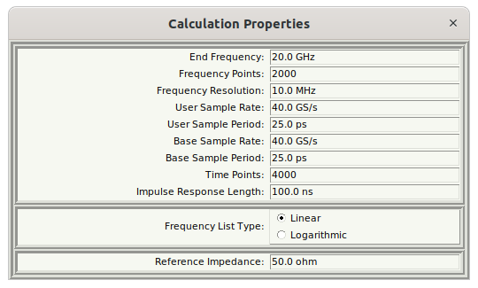

S-parameter Generation Example
In this example we will generate the mixed-mode s-parameters of a differential transmission line.
We start by opening the file provided in the examples. The file is included with the SignalIntegrityApp and can be found at ./Examples/SParameterGenerationExample.xml:

Here we see three devices and four ports.
To build this example, we first create a New Project↓.
We added the devices by executing Add Part↓, opening the Files category, and selecting the Four Port File↓ device.

In the part properties dialog, we select the file: Sparq_demo_16.s4p.


We also selected the left-most checkbox on the file name property so that it displays in the schematic.
Pressing OK and clicking the mouse causes the part to appear in the schematic.
At this point, our schematic looks like this:

Notice the red x’s showing where the part pins are unconnected. Also note that the part is blue and the status message says Part Selected.
We then add the mixed-mode converter devices by again executing Add Part↓, opening the Miscellaneous category, and selecting the Power Mixed Mode Converter↓.

This part has no properties.
Pressing OK and clicking the mouse causes the part to appear in the schematic.
At this point, our schematic looks like this:

Since we are converting single-ended to mixed-mode s-parameters, we need to hook the positive and negative ports of the left and right sides of the four-port device to the mixed-mode converters. But we don’t really know for sure where the positive and negative ports are on this device.
To find out, we select our four port device and invoke Edit Properties↓. This brings up the part properties dialog again for the file device:

Next to the file name, we see the view button. Pressing this brings up the S-parameter Viewer↓.
The s-parameters to view are selected from the box of buttons in the lower left. Selecting s31, we see:

and selecting s41 we see:

s31 is clearly the positive thru response for the single-ended ports 1 and 3 and s41 is clearly the ac-coupled response of the other input port to output port 3. There is no indication necessarily of which ports are inputs our outputs (i.e. on the left or right of the device) and no indication which of the input or output ports should be designated plus or minus, but it is safe to choose ports 1 and 2 as the left plus and minus ports and ports 3 and 4 as the right plus and minus ports (note that we should look at s42 and s41 to confirm this).
We will need two mixed-mode converters. We have one already, so we drag it over and connect the plus and minus ports to ports 3 and 4 of our four-port transmission line as shown:

It’s easy to get another mixed-mode converter on the other side. Just invoke Duplicate Part↓ with the mixed-mode converter selected and when the cursor changes to a finger, just click on the left of the file device to place a copy of the part. Since it is the wrong orientation, invoke Flip Horizontally↓ to flip it around and drag it into position as shown:

Now we invoke Add Port↓ to add a Port↓ to the circuit. When we do this, we see the part properties dialog for the port:

Note that the port number 1 has already been filled in. Press OK and click and drag the port into place:

It is customary for mixed-mode s-parameters to have ports 1, 2, 3, and 4 to be D1, D2, C1, C2 where the D and C refer to the differential- and common-mode and the 1 and 2 refer to the left and right side of the transmission line. So we invoke Duplicate Part↓ and click the mouse and drag the new port to the right side of the device. Use Flip Horizontally↓ to flip the port around and place it as shown:

The rest of the ports are added in a similar manner:
The next step is to set the Calculation Properties↓. By default they look like this:

When we looked at the s-parameters, we can see that the end frequency is 20 GHz and the impulse response length is 100 ns. It looks like the 100 ns impulse response length might be excessive, so we use 50 ns. We double click in the impulse response length entry box and type 50n and press enter. Now we see:

Note that, in general, we really don’t want to think of the number of frequency points in an s-parameter file. Instead, we choose to think in terms of impulse response length. In this example, this happens to mean one thousand frequency points.
Before calculating the s-parameters, it’s also good to look at the Netlist↓. Invoking Export Netlist↓, we see:

If you’ve read the book that accompanies the SignalIntegrity software, this netlist should be familiar to you. If you press OK, you can save this netlist to a file, if you wanted to.
To calculate the s-parameters, invoke Calculate↓ or Calculate S-parameters↓. There should not be any errors (if there are, see Errors and Exceptions↓) and you should see the S-parameter Viewer↓:

You can select the s-parameters you want to view from the buttons at the lower-left and save the results to a file if you want: